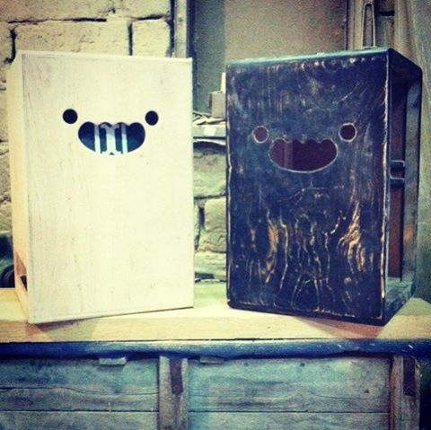

О НАС
DOSHKA – DOSHKA – украинский производитель перкуссий, который предлагает первоклассную продукцию по доступной цене. Производство наших перкуссий – ручная, авторская работа. На всех этапах производства используются высококачественные материалы и музыкальный подход, чтобы при игре на перкуссии DOSHKA вы ощущали всю гармонию звука. Товары, представленные на нашем сайте http://www.doshka-drums.com.ua/ – это постоянно увеличивающийся ассортимент, вы всегда сможете подобрать инструмен по звучанию и эргономике. Мы с радостью будем прислушиваться к вашим пожеланиям и нуждам – если какого-либо перкуссионного инструмента нет в наличии или вообще в ассортименте – смело обращайтесь к нам, и мы обсудим варианты его изготовления под заказ. Также мы оказываем услугу брендирование наших товаров вашим логотипом или названием группы. На некоторые инструменты мы предоставляем полное гарантийное обслуживание сроком на год с момента приобретения товара, а также с радостью поможем решить вопросы с пост-гарантийным обслуживанием. DOSHKA – это не просто перкуссия, это сама музыка!
ПОДРОБНЕЕ